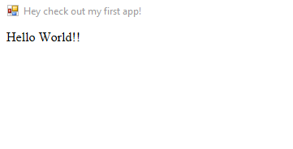
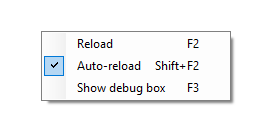

What's this all about?
Scriptonit is a tool that you can use to create a Windows EXE with all the skills you already have from web programming. That is, if you know what HTML is and you speak some Javascript, you'll have no problems to implement whatever's in your mind and it will all look like a standard exe application. Behind the scenes it will run in a browser (Edge) but noone will actually realize that if you don't want them to. Your window will look like any other OS-created window; you can even minimize or resize it programmatically. You can run shell commands and capture their output, access the local filesystem, interact with the user, display the progress of something running in the background, etc - and all you have to do is write a few lines of JS code. Scriptonit will take care of the rest.
Hello World
There is an example program called Hello World. With this, you can easily understand the anatomy of a Scriptonit application:
hello.exe
assets/start.htmlThis is the bare minimum. The name of the folder "assets" is fixed; also the name of the file to be loaded first: start.html - and it should be in assets. That's all you need for such a simple task. Let's see how the HTML looks:
<!doctype html>
<html>
<head>
<meta http-equiv="content-type" content="text/html; charset=utf-8" />
<meta http-equiv="X-UA-Compatible" content="IE=EDGE" />
<title> Your first app! </title>
</head>
<body>
Hello World!
</body>
</html>As you can see, there's nothing special here, other than the second meta tag; this is required for Edge to actually behave like Edge, not some stupid Internet Explorer. Apart from this, everything is pretty straightforward if you've ever worked with HTML.
Later, the <title> tag will become your application window's title; in a while we'll see how that works. But first, let's set the title another way - and for this, we'll need the JS library called the Scriptonit engine.
Scriptonit Engine
Let's add one line before the closing line of the body:
<script src="Scriptonit.Engine.js"></script>So now the body looks like:
<body>
Hello World!
<script src="Scriptonit.Engine.js"></script>
</body>Now we have the functions ready to use but we're not actually using them; so it's time to start some Javascript coding. For this, we add another line:
<body>
Hello World!
<script src="Scriptonit.Engine.js"></script>
<script src="start.js"></script>
</body>...and of course we must add the file assets/Scriptonit.Engine.js to the project. But usually it's already there. Now let's create a start.js from scratch (in assets folder, like everything else):
var sci = new ScriptonitInterface(); // create an instance
sci.window.setTitle("Hey check out my first app!");That was easy:
Now we have the window title under control.
Automatic reloading
Leave your application running now, and try to edit the window title in the Javascript file! As you can see, your running exe file monitors the source folder so your title instantly changes as you modify the source. How cool, isn't it? This is called the Auto-reload feature. You can turn this off if it's annoying - just right click anywhere on your window and flip the switch:
As you can see there are hotkeys for everything. (If your application wants to use these hotkeys for something else, they can be turned off, more on that later.) F2 is quite simple, it's for manual reloading; F5 also works because you're inside a browser.
Stylesheet
Let's add a stylesheet now! Scriptonit supports LESS and CSS stylesheets, so if you only know CSS you won't get into trouble - just start doing what you'd normally do, add the <link> tag in the head section of your html file:
<head>
<meta http-equiv="content-type" content="text/html; charset=utf-8" />
<meta http-equiv="X-UA-Compatible" content="IE=EDGE" />
<link rel="stylesheet" href="start.css">
<title> Your first app! </title>
</head>And now you can style the hell out of your contents:
body {
padding: 30px 40px;
font: 20px arial;
color: steelblue;
}A lot more attractive, right?... Now if you prefer LESS, all you have to do is rename your file start.less and include less2css.exe in the project. (It's also there by default.) This compiler automatically translates our something.less file into a something.less.css, so we should now modify the start.html link tag too:
<link rel="stylesheet" href="start.less.css">It's IMPORTANT to know that the less-to-css transformation only happens automatically when the application is running AND you change the .less file. This is very convenient but also a bit confusing for the first time - so if you don't see your styles right away, leave the app running and change something in start.less! (An empty line will do nicely.) It should be refreshed now; and there's a new file called start.less.css which is freshly created by less2css.exe. You won't have to worry about these guys anymore, just focus on start.less and everything else happens like magic.
How a normal project looks
Now that we have a few more files, let's see what a typical Scriptonit project looks like:
assets/...
less2css.exe LESS to CSS compiler
Scriptonit.Engine.js The Scriptonit Interface
Scriptonit.Helpers.js Some helper functions
start.html Your little autoexec :)
start.js You know this one, we've just created it
start.less Also a familiar guy
start.less.css Generated from start.lessIt will always be like this: one single exe file in the main folder and a lot of good stuff under assets. So now that we have a Scriptonit engine and the helpers, let's use their power!
Scriptonit capabilities
Let's keep up with the convention that sci is our Scriptonit Interface object! Now we have the following groups of commands (technically, smaller objects inside sci):
sci.window Deal with the application window
sci.file Access the filesystem, load/save/etc
sci.shell Run shell (MSDOS) commands, capture their output
sci.dialog Use standard Windows dialogs (not yet supported!)Window methods
You have some basic methods to manipulate your application window:
sci.window.setTitle(text) // Set window title (you know this)
sci.window.minimize() // Minimize window
sci.window.maximize() // Maximize window
sci.window.restore() // Set normal window
sci.window.setLeft(x) // Set window left edge, relative to screen
sci.window.setTop(y) // Set window top edge, relative to screen
sci.window.setWidth(w) // Set window outer width in pixels
sci.window.setHeight(h) // Set window outer height in pixels
sci.window.getLeft() // Get left edge
sci.window.getTop() // Get top edge
sci.window.getWidth() // Get outer width
sci.window.getHeight() // Get outer heightFile methods
You can access the filesystem using the sci.file.xxxx methods; these are mapped to native .NET calls so it's all pretty fast. Still, it's not recommended to work with huge (>1GB) files for performance reasons; file interface has no proper file open/seek/read mechanism at the moment so all you can do is read a whole file or write it all back.
sci.file.load(name) // Read the contents of a file into a string
sci.file.save(name,text) // Write a string into a file
sci.file.exists(name) // Returns if the file is there (true/false)Shell methods
Shell interface gives you an easy way to run MSDOS commands; either as a short command which will run fully and return a string result, or (for longer processes) a background thread that you can actively monitor via callbacks. For these two very different approaches you have two methods:
sci.shell.shortCommand(cmd) // Run command, wait for exit, return output
sci.shell.capture(cmd,f1,f2) // Start background command with callback functionsCapture works with 2 callbacks: one for ongoing reads, called periodically during waiting for the command to end; the other is called after it's all done and the results are final. Both callbacks should have a string parameter, the ongoing one will be called with the difference since the last call (arrived lines) and the final callback will get the whole string.
sci.shell.shortCommand, on the other hand, will simply return the whole result, no callbacks, no waiting, no nothing. Be careful though: it's up to you to ensure that the command will not run for a long time, like many seconds for example. Scriptonit will do nothing else while waiting, so make it as short as possible.